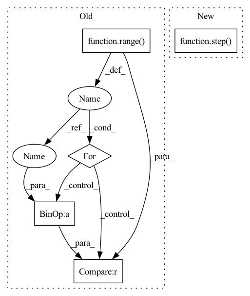

Pattern ID :4184
Before Change
src = input_embed(ctx, src)
zero = shard(jnp.zeros_like(src))
src = (ctx.parameters, src, zero, src, zero)
for i in range( ctx.model.depth):
src = reversible(ctx, spatial_mixing, (i + 1) == ctx.model.depth)(src)
src = reversible(ctx, feed_forward, (i + 1) == ctx.model.depth )(src)
src = src[1] + src[3]
return contrastive_output_embed(ctx, src) if ctx.training.contrastive else output_embed(ctx, src)
After Change
src = input_embed(ctx, src)
zero = shard(jnp.zeros_like(src))
src = (ctx.parameters, src, zero, src, zero)
src = lax.scan(step( ctx) , (src, jnp.zeros([])), None, ctx.dims.sizes.depth, unroll=ctx.model.scan_unroll)
return output_embed(ctx, revnet_out(src[0][1:]))
In pattern: SUPERPATTERN
Frequency: 4
Non-data size: 5
Instances Fragment ID: 15396667
Project Name: homebrewnlp/olmax
Commit Name: 7ed6886625803952b38a63e565e4d05fa04a4f7d
Time: 2021-09-12
Author: 39779310+ClashLuke@users.noreply.github.com
File Name: src/model.py
M Class Name: AnonimousClass
N Class Name: AnonimousClass
M Method Name: body_ctx(2)
N Method Name: body_ctx(2)
M Parent Class:
N Parent Class:
M File Name: src/model.py
N File Name: src/model.py
M Start Line: 263
M End Line: 268
N Start Line: 263
N End Line: 265
Before Change
src = input_embed(ctx, src)
zero = jnp.zeros_like(src)
src = (ctx.parameters, src, zero, src, zero)
for i in range( ctx.dims.depth):
src = reversible(ctx, pointwise_block, src)
src = reversible(ctx, bottleneck_block, src)
src = reversible(ctx, pointwise_block, src)
if i % ctx.model.qrnn_frequency == (ctx.model.qrnn_frequency // 2 - 1) :
src = reversible(ctx, qrnn_block, src)
out = revnet_out(src[1:])
out = scale_norm_act(ctx, out, ctx.dims.features, act=False)After Change
ctx.parameters = step(ctx)(src, ({}, 0))
ctx.add_depth = False
else:
src, _ = step( ctx) (src, ({}, 0))
out = revnet_out(src)
out = scale_norm_act(ctx, out, ctx.dims.features, act=False)
wgt = get_param(ctx, "out_embd", [ctx.dims.features, ctx.dims.vocab], std=1, Fragment ID: 15396671
Project Name: homebrewnlp/homebrewnlp-jax
Commit Name: 457dca1ca35d447a12a1e2ede9ac2e19b93c20a1
Time: 2022-08-28
Author: 39779310+ClashLuke@users.noreply.github.com
File Name: src/model/main.py
M Class Name: AnonimousClass
N Class Name: AnonimousClass
M Method Name: body_ctx(2)
N Method Name: body_ctx(2)
M Parent Class:
N Parent Class:
M File Name: src/model/main.py
N File Name: src/model/main.py
M Start Line: 27
M End Line: 36
N Start Line: 55
N End Line: 64
Before Change
src = input_embed(ctx, src)
zero = shard(jnp.zeros_like(src))
src = (ctx.parameters, src, zero, src, zero)
for i in range( ctx.model.depth):
src = reversible(ctx, spatial_mixing, (i + 1) == ctx.model.depth )(src)
src = reversible(ctx, feed_forward, (i + 1) == ctx.model.depth)(src)
src = src[1] + src[3]
return contrastive_output_embed(ctx, src) if ctx.training.contrastive else output_embed(ctx, src)After Change
src = input_embed(ctx, src)
zero = shard(jnp.zeros_like(src))
src = (ctx.parameters, src, zero, src, zero)
src = lax.scan(step( ctx) , (src, jnp.zeros([])), None, ctx.dims.sizes.depth, unroll=ctx.model.scan_unroll)
return output_embed(ctx, revnet_out(src[0][1:]))
Fragment ID: 15396669
Project Name: homebrewnlp/homebrewnlp-jax
Commit Name: 7ed6886625803952b38a63e565e4d05fa04a4f7d
Time: 2021-09-12
Author: 39779310+ClashLuke@users.noreply.github.com
File Name: src/model.py
M Class Name: AnonimousClass
N Class Name: AnonimousClass
M Method Name: body_ctx(2)
N Method Name: body_ctx(2)
M Parent Class:
N Parent Class:
M File Name: src/model.py
N File Name: src/model.py
M Start Line: 263
M End Line: 268
N Start Line: 263
N End Line: 265
Before Change
src = [ctx.parameters] + list(src)
for _ in range(ctx.model.unroll_depth):
for depth in range( ctx.model.qrnn_frequency):
src = reversible(ctx, pointwise_block, src)
src = reversible(ctx, bottleneck_block, src)
src = reversible(ctx, pointwise_block, src)
if depth % ctx.model.qrnn_frequency == (ctx.model.qrnn_frequency // 2 - 1) :
src = reversible(ctx, qrnn_block, src)
// lax.cond could work but requires work on the parameter store
if ctx.is_initializing:After Change
zero = jnp.zeros_like(src)
src = (src, zero, src, zero)
if ctx.is_initializing:
ctx.parameters = step( ctx) (src, ({}, 0))
else:
src, _ = step(ctx)(src, (ctx.parameters, 0))
out = revnet_out(src) Fragment ID: 15396677
Project Name: homebrewnlp/homebrewnlp-jax
Commit Name: cc7b415282fc8fc070b181ae8d1f79b084a6e315
Time: 2022-08-28
Author: 39779310+ClashLuke@users.noreply.github.com
File Name: src/model/main.py
M Class Name: AnonimousClass
N Class Name: AnonimousClass
M Method Name: body_ctx(2)
N Method Name: body_ctx(2)
M Parent Class:
N Parent Class:
M File Name: src/model/main.py
N File Name: src/model/main.py
M Start Line: 29
M End Line: 43
N Start Line: 50
N End Line: 55